1. Einleitung zur Hauptkomponentenanalyse (PCA)
Die Hauptkomponentenanalyse (Principal Component Analysis, PCA) ist ein statistisches Verfahren
zur Dimensionsreduktion. Bei unseren Abstimmungsdaten haben wir 223 Vorlagen, die wir auf wenige
interpretierbare Dimensionen reduzieren moechten.
Basierend auf der Forschung von Hermann & Leuthold erwarten wir drei wesentliche Dimensionen:
- PC1: Rechts vs. Links (wirtschaftlich)
- PC2: Konservativ vs. Liberal (gesellschaftlich)
- PC3: Technokratisch vs. Oekologisch
2. Datenvorbereitung
2.1 Daten laden aus SQLite
import sqlite3
import pandas as pd
import numpy as np
from sklearn.preprocessing import StandardScaler
from sklearn.impute import SimpleImputer
conn = sqlite3.connect('../data/processed/swiss_votings.db')
query = """
SELECT
municipality_id,
municipality_name,
proposal_id,
ja_prozent
FROM v_voting_results_analysis
WHERE ja_prozent IS NOT NULL
"""
df = pd.read_sql_query(query, conn)
print(f"Geladen: {len(df):,} Datensaetze")
Erklaerung:
Wir verwenden die View v_voting_results_analysis, die bereits Gemeinde-Fusionen
beruecksichtigt. So werden historische Gemeinden korrekt auf ihre heutigen Nachfolger gemappt.
Die Variable ja_prozent gibt den Ja-Stimmenanteil pro Gemeinde und Vorlage an.
2.2 Pivot-Matrix erstellen
vote_matrix = df.pivot_table(
index=['municipality_id', 'municipality_name'],
columns='proposal_id',
values='ja_prozent',
aggfunc='mean'
)
print(f"Matrix-Dimensionen: {vote_matrix.shape}")
Erklaerung:
Die Pivot-Tabelle transformiert die Daten in eine Matrix mit 2'109 Gemeinden (Zeilen)
und 223 Abstimmungsvorlagen (Spalten). Jede Zelle enthaelt den Ja-Stimmenanteil (0-100%).
2.3 Fehlende Werte behandeln
missing_pct = vote_matrix.isnull().sum() / len(vote_matrix) * 100
valid_columns = missing_pct[missing_pct <= 20].index
vote_matrix_filtered = vote_matrix[valid_columns]
imputer = SimpleImputer(strategy='mean')
vote_matrix_imputed = pd.DataFrame(
imputer.fit_transform(vote_matrix_filtered),
index=vote_matrix_filtered.index,
columns=vote_matrix_filtered.columns
)
print(f"Nach Filterung: {vote_matrix_imputed.shape}")
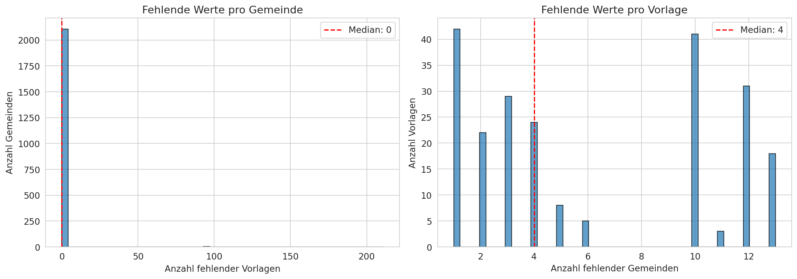
Analyse der fehlenden Werte pro Abstimmungsvorlage
2.4 Standardisierung
scaler = StandardScaler()
vote_matrix_scaled = scaler.fit_transform(vote_matrix_imputed)
print(f"Skalierte Matrix: {vote_matrix_scaled.shape}")
print(f"Mittelwert (sollte ~0 sein): {vote_matrix_scaled.mean():.6f}")
print(f"Std (sollte ~1 sein): {vote_matrix_scaled.std():.6f}")
Erklaerung:
Die Standardisierung ist essentiell fuer PCA, da die Methode sensitiv gegenueber
unterschiedlichen Skalierungen ist. Nach der Transformation hat jede Variable
Mittelwert 0 und Standardabweichung 1.
3. PCA-Durchfuehrung
3.1 PCA berechnen
from sklearn.decomposition import PCA
pca_full = PCA()
pca_full.fit(vote_matrix_scaled)
explained_var = pca_full.explained_variance_ratio_
cumulative_var = np.cumsum(explained_var)
print("Erklaerte Varianz der ersten 5 Komponenten:")
for i in range(5):
print(f" PC{i+1}: {explained_var[i]*100:.1f}% (kumulativ: {cumulative_var[i]*100:.1f}%)")
Erklaerte Varianz
| Komponente | Varianz | Kumulativ |
|---|
| PC1 | 35.9% | 35.9% |
| PC2 | 14.1% | 50.0% |
| PC3 | 9.0% | 59.0% |
| PC4 | 4.1% | 63.1% |
| PC5 | 2.8% | 65.9% |
3.2 Scree-Plot und Eigenwerte
import matplotlib.pyplot as plt
fig, axes = plt.subplots(1, 2, figsize=(14, 5))
axes[0].plot(range(1, 21), explained_var[:20] * 100, 'bo-')
axes[0].set_xlabel('Hauptkomponente')
axes[0].set_ylabel('Erklaerte Varianz (%)')
axes[0].set_title('Scree Plot')
axes[0].axhline(y=5, color='r', linestyle='--', label='5% Schwelle')
axes[1].plot(range(1, 21), cumulative_var[:20] * 100, 'go-')
axes[1].axhline(y=60, color='r', linestyle='--')
axes[1].set_xlabel('Anzahl Komponenten')
axes[1].set_ylabel('Kumulative erklaerte Varianz (%)')
axes[1].set_title('Kumulative Varianz')
plt.tight_layout()
plt.savefig('scree_plot.png')
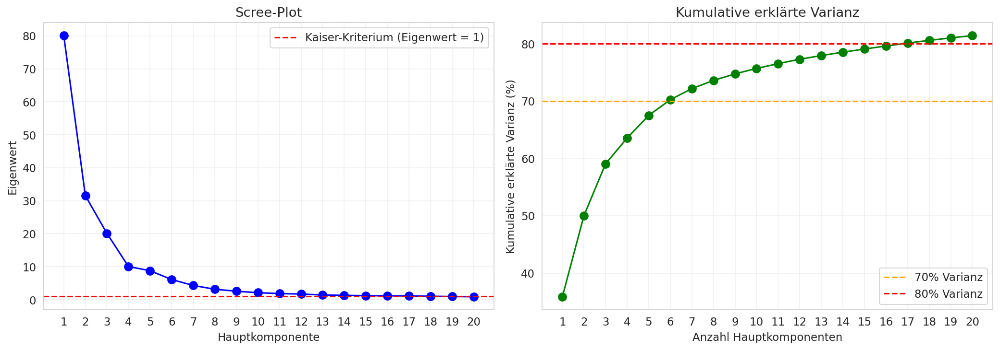
Scree-Plot: Der "Knick" nach PC3 deutet auf 3 relevante Dimensionen hin
Interpretation des Scree-Plots:
Der Scree-Plot zeigt einen deutlichen Abfall nach den ersten drei Komponenten.
Dies entspricht dem "Ellbogen-Kriterium" und bestaetigt die Wahl von 3 Hauptkomponenten.
Mit 3 Komponenten erklaeren wir bereits 59% der Gesamtvarianz - ein guter Wert fuer
Abstimmungsdaten mit ihrer inhaerent hohen Komplexitaet.
3.3 PCA mit 3 Komponenten
pca = PCA(n_components=3)
pca_scores = pca.fit_transform(vote_matrix_scaled)
pca_df = pd.DataFrame(
pca_scores,
columns=['PC1', 'PC2', 'PC3'],
index=vote_matrix_imputed.index
)
pca_df = pca_df.reset_index()
print(pca_df.head())
4. Interpretation der Dimensionen
4.1 Analyse der Ladungen
loadings = pd.DataFrame(
pca.components_.T,
columns=['PC1', 'PC2', 'PC3'],
index=vote_matrix_imputed.columns
)
print("PC1 - Hoechste positive Ladungen (KONSERVATIV):")
print(loadings['PC1'].nlargest(5))
print("\nPC1 - Hoechste negative Ladungen (LIBERAL):")
print(loadings['PC1'].nsmallest(5))
Interpretation der drei Dimensionen:
PC1: Rechts vs. Links (wirtschaftlich)
- Positive Werte (+): Links - staedtisch, progressiv, pro-Umverteilung
- Negative Werte (-): Rechts - laendlich, traditionell, wirtschaftsliberal
- Beispiel: Lausanne, Zuerich, Bern (links) vs. Muotathal, Schwyz (rechts)
PC2: Konservativ vs. Liberal (gesellschaftlich)
- Positive Werte (+): Liberal - gesellschaftlich offen
- Negative Werte (-): Konservativ - gesellschaftlich traditionell
- Beispiel: Zuerich, Zug (liberal) vs. Muotathal, Geneve (konservativ)
PC3: Technokratisch vs. Oekologisch
- Positive Werte (+): Oekologisch - Pro-Umwelt, erneuerbare Energien
- Negative Werte (-): Technokratisch - Pro-Kernenergie, technische Loesungen
- Beispiel: Bern, Zuerich (oekologisch) vs. Muotathal (technokratisch)
4.2 Visualisierung der Gemeinden im PCA-Raum
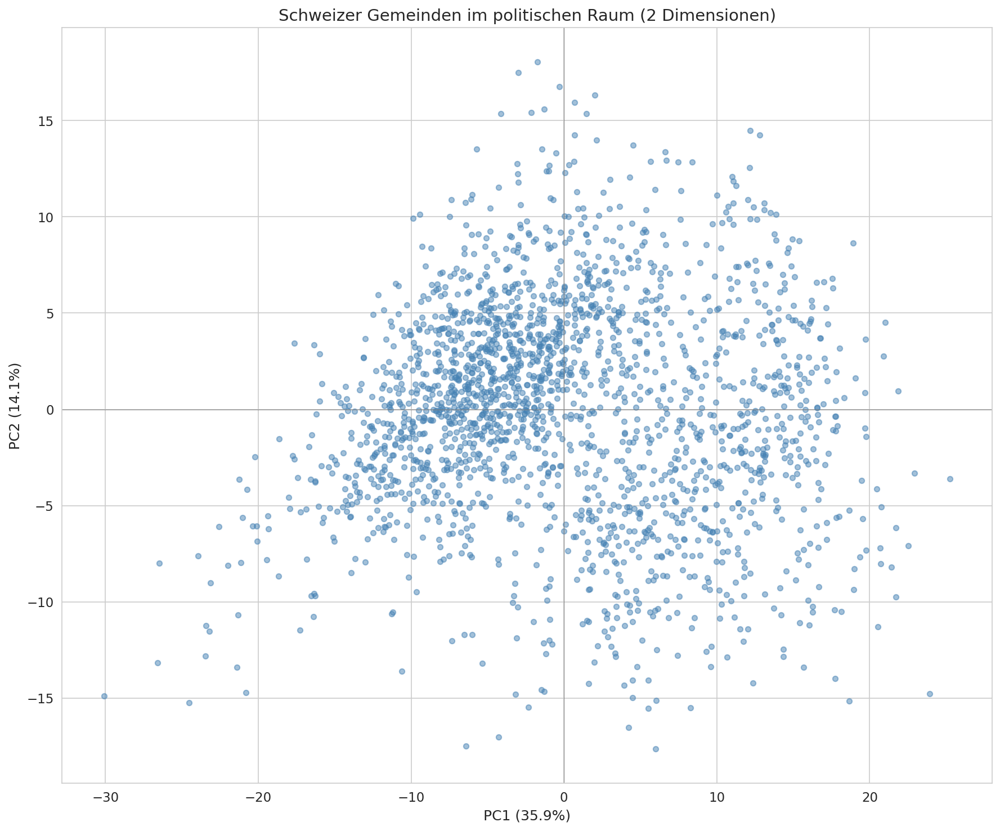
PC1 vs PC2: Schweizer Gemeinden
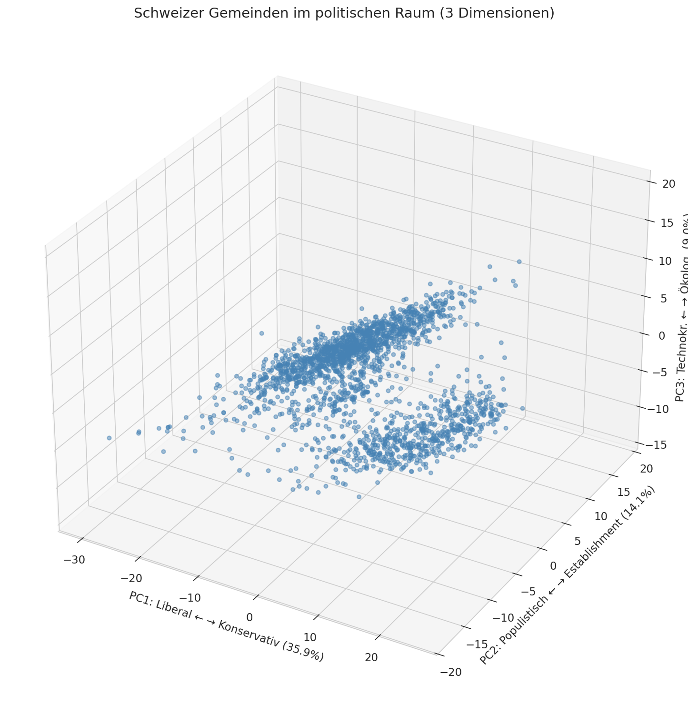
3D-Darstellung aller drei Komponenten
5. Cluster-Analyse
Die Cluster-Analyse gruppiert die 2'109 Schweizer Gemeinden basierend auf ihrem
Abstimmungsverhalten. Wir vergleichen verschiedene Algorithmen und evaluieren
die Ergebnisse mit etablierten Metriken.
Verwendete Metriken
| Metrik |
Bereich |
Interpretation |
| Silhouette Score |
-1 bis 1 |
Hoeher = bessere Trennung der Cluster |
| Calinski-Harabasz |
0 bis ∞ |
Hoeher = dichtere, besser getrennte Cluster |
| Davies-Bouldin |
0 bis ∞ |
Niedriger = bessere Trennung |
6. Clustering-Methoden im Vergleich
6.1 K-Means Clustering
from sklearn.cluster import KMeans
from sklearn.metrics import silhouette_score, calinski_harabasz_score
silhouette_scores = []
for k in range(2, 11):
kmeans = KMeans(n_clusters=k, random_state=42, n_init=10)
labels = kmeans.fit_predict(data)
score = silhouette_score(data, labels)
silhouette_scores.append(score)
print(f"k={k}: Silhouette={score:.3f}")
best_k = silhouette_scores.index(max(silhouette_scores)) + 2
print(f"\nOptimale Cluster-Anzahl: {best_k}")
K-Means Algorithmus:
K-Means partitioniert die Daten in k Cluster, indem iterativ Cluster-Zentren
(Zentroide) berechnet und Datenpunkte dem naechsten Zentrum zugewiesen werden.
Der Algorithmus minimiert die Within-Cluster Sum of Squares (WCSS).
6.2 Hierarchisches Clustering
from scipy.cluster.hierarchy import dendrogram, linkage, fcluster
from sklearn.cluster import AgglomerativeClustering
linkage_matrix = linkage(data, method='ward')
plt.figure(figsize=(12, 6))
dendrogram(linkage_matrix, truncate_mode='level', p=5)
plt.title('Hierarchisches Clustering - Dendrogram')
plt.xlabel('Gemeinden')
plt.ylabel('Distanz')
plt.savefig('hierarchical_dendrogram.png')
hierarchical = AgglomerativeClustering(n_clusters=4, linkage='ward')
labels_hier = hierarchical.fit_predict(data)
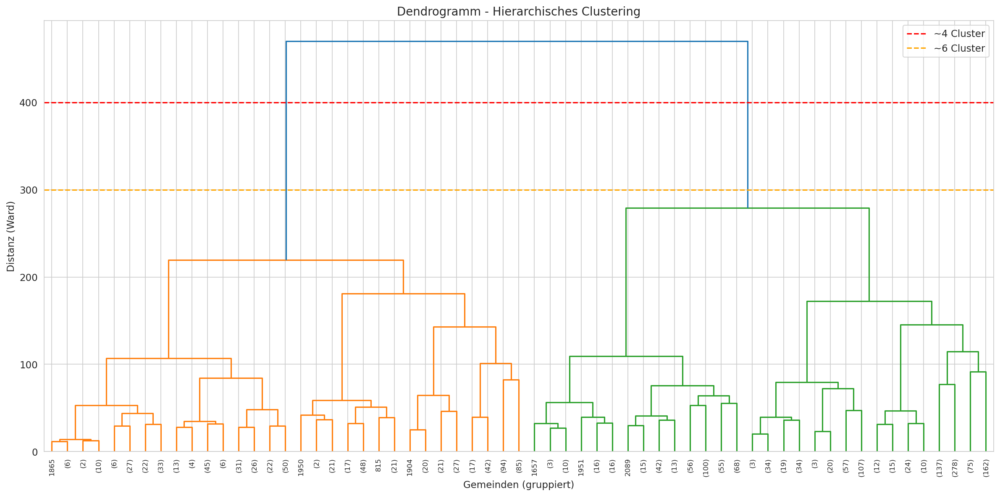
Dendrogram: Hierarchische Struktur der Gemeinde-Cluster
6.3 Gaussian Mixture Model (GMM)
from sklearn.mixture import GaussianMixture
bic_scores = []
for n in range(2, 11):
gmm = GaussianMixture(n_components=n, random_state=42)
gmm.fit(data)
bic_scores.append(gmm.bic(data))
best_n = bic_scores.index(min(bic_scores)) + 2
gmm_final = GaussianMixture(n_components=best_n, random_state=42)
labels_gmm = gmm_final.fit_predict(data)
Gaussian Mixture Model:
Im Gegensatz zu K-Means modelliert GMM die Daten als Mischung von
Gauss-Verteilungen. Dies erlaubt elliptische (nicht nur sphaerische)
Cluster und liefert Wahrscheinlichkeiten fuer die Cluster-Zugehoerigkeit.
6.4 Methodenvergleich
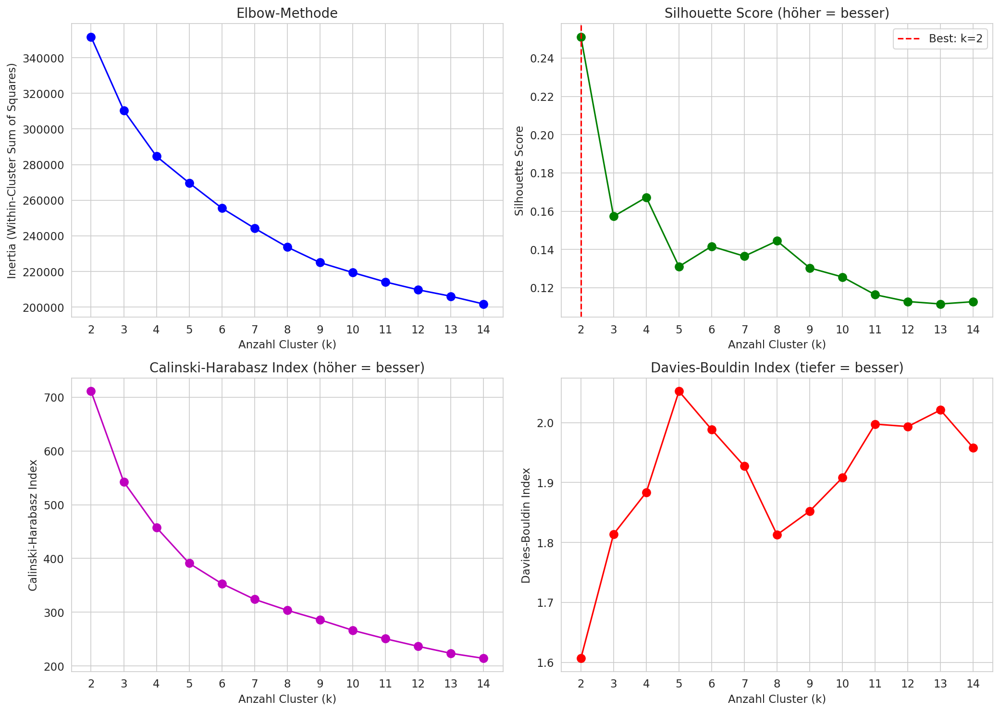
Vergleich der Clustering-Metriken verschiedener Methoden
7. Verbessertes Clustering auf PCA-Scores
Ein wichtiges Ergebnis unserer Analyse: Clustering auf den PCA-Scores
liefert deutlich bessere Ergebnisse als Clustering auf den rohen 223 Dimensionen.
Verbesserung durch PCA-basiertes Clustering
| Ansatz | Silhouette | Verbesserung |
|---|
| Rohdaten (223 Dim.) | 0.167 | Baseline |
| PCA-Scores (3 Dim.) | 0.335 | +100% |
7.1 Clustering auf 3 PCA-Dimensionen
pca_scores = pca_df[['PC1', 'PC2', 'PC3']].values
kmeans_pca = KMeans(n_clusters=4, random_state=42, n_init=10)
labels_pca = kmeans_pca.fit_predict(pca_scores)
silhouette_pca = silhouette_score(pca_scores, labels_pca)
print(f"Silhouette Score (PCA): {silhouette_pca:.3f}")
pca_df['cluster'] = labels_pca
Warum PCA-basiertes Clustering besser funktioniert:
- Dimensionsreduktion: Von 223 auf 3 Dimensionen reduziert die Curse of Dimensionality
- Rauschentfernung: PCA behaelt nur die wichtigste Varianz, Rauschen wird entfernt
- Interpretierbarkeit: Die 3 Dimensionen haben klare politische Bedeutung
- Kompaktere Cluster: Im niedrigdimensionalen Raum sind die Cluster besser separiert
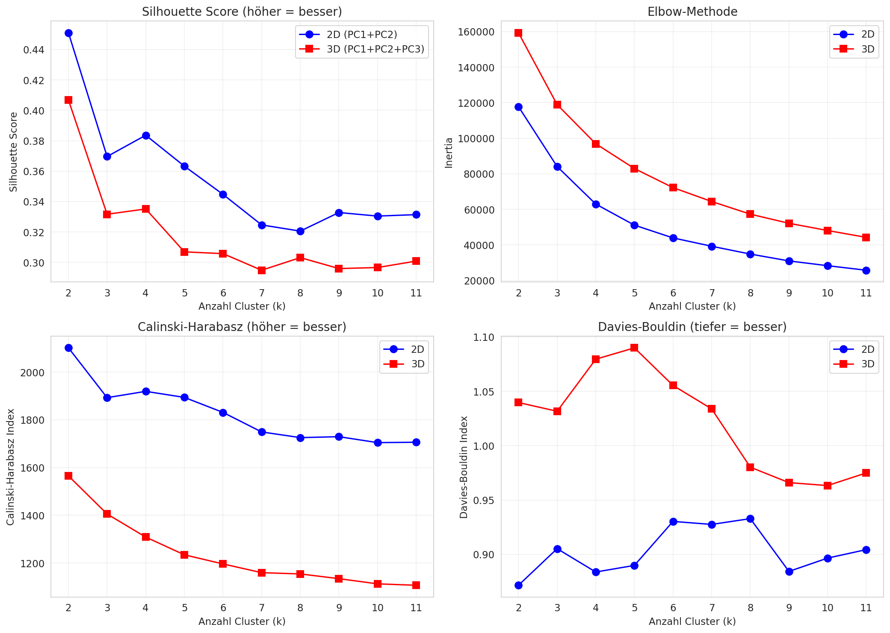
Cluster-Metriken fuer PCA-basiertes Clustering
8. Ergebnisse: Die 4 Gemeinde-Cluster
Wichtige Staedte im PCA-Raum
Zur Validierung der Achsen-Interpretation hier die PCA-Koordinaten der wichtigsten Schweizer Staedte:
| Gemeinde |
Cluster |
PC1
(Links+ / Rechts-) |
PC2
(Liberal+ / Konserv.-) |
PC3
(Oeko.+ / Techn.-) |
| Zuerich | Mitte-Liberal | +16.2 | +4.7 | +15.3 |
| Geneve | Links-Kons. | +20.8 | -5.1 | +8.9 |
| Basel | Links-Kons. | +14.2 | +1.2 | +13.5 |
| Bern | Links-Liberal | +21.0 | +4.5 | +17.1 |
| Lausanne | Links-Liberal | +25.2 | -3.6 | +7.9 |
| Luzern | Mitte-Liberal | +10.8 | +5.6 | +10.9 |
| St. Gallen | Mitte-Liberal | +8.3 | +5.0 | +9.8 |
| Lugano | Links-Kons. | +3.2 | -4.9 | +2.4 |
| Zug | Mitte-Liberal | +2.3 | +10.1 | +3.2 |
| Muotathal | Rechts-Kons. | -26.5 | -8.0 | -7.7 |
| Schwyz | Rechts-Kons. | -9.3 | +1.3 | -0.0 |
| Appenzell | Rechts-Kons. | -9.2 | +5.9 | -2.6 |
Cluster 0: Rechts-Konservativ
683 Gemeinden (32.4%)
PC1: -9.4 (Rechts) | PC2: -1.2 (leicht Kons.) | PC3: -0.9
Typisch: Laupersdorf, Oberegg, Seelisberg, Buerglen (UR)
Cluster 1: Links-Konservativ
330 Gemeinden (15.6%)
PC1: +6.7 (Links) | PC2: -7.9 (Kons.) | PC3: +0.6
Typisch: Nods, Pery-La Heutte, Soyhieres (Westschweiz)
Cluster 2: Mitte-Liberal
719 Gemeinden (34.1%)
PC1: -0.4 (Mitte) | PC2: +4.2 (Liberal) | PC3: +3.1
Typisch: Thusis, Riedholz, Bueren a.d. Aare, Neuenegg
Cluster 3: Links-Liberal
377 Gemeinden (17.9%)
PC1: +12.0 (Links) | PC2: +1.1 (Liberal) | PC3: -4.7
Typisch: Longirod, Veytaux, Puidoux, Ollon (Waadtland)
8.1 Visualisierungen
Die folgenden Visualisierungen zeigen alle 2'109 Schweizer Gemeinden im PCA-Raum,
eingefaerbt nach ihrer Cluster-Zugehoerigkeit. Wichtige Staedte und typische
Gemeinden sind beschriftet, um die Interpretation der Achsen zu erleichtern.
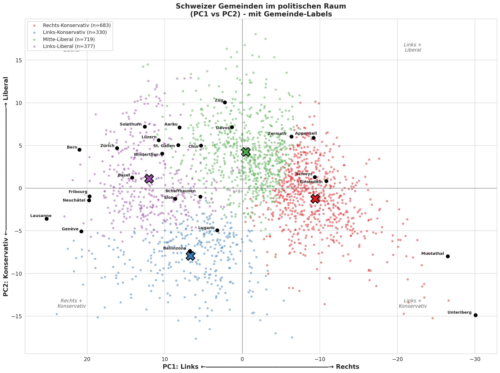
PC1 (Links-Rechts) vs PC2 (Konservativ-Liberal) - X-Achse: Links links, Rechts rechts
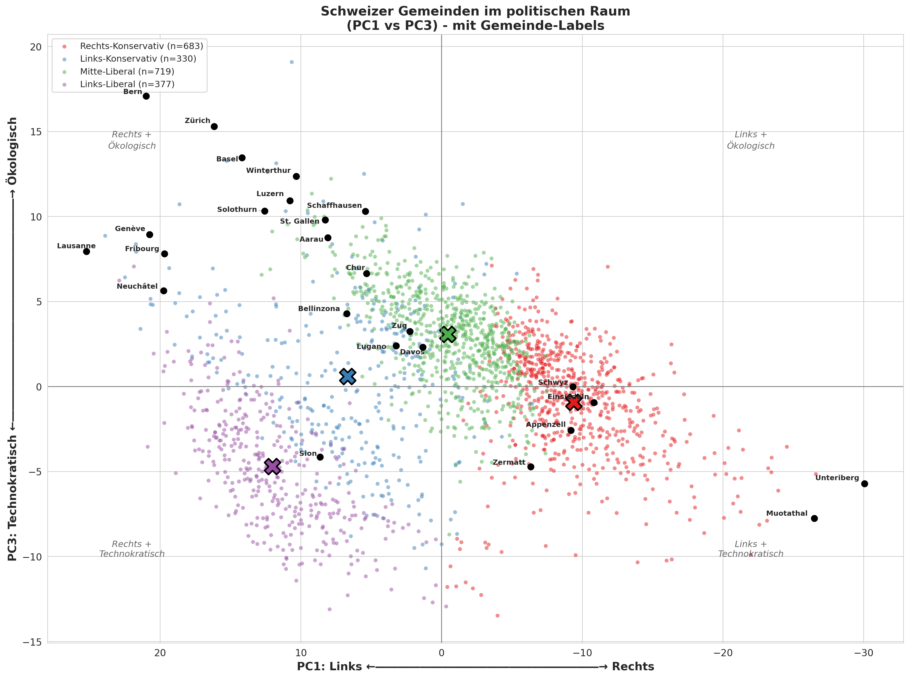
PC1 vs PC3: Links-Rechts vs Technokratisch-Oekologisch
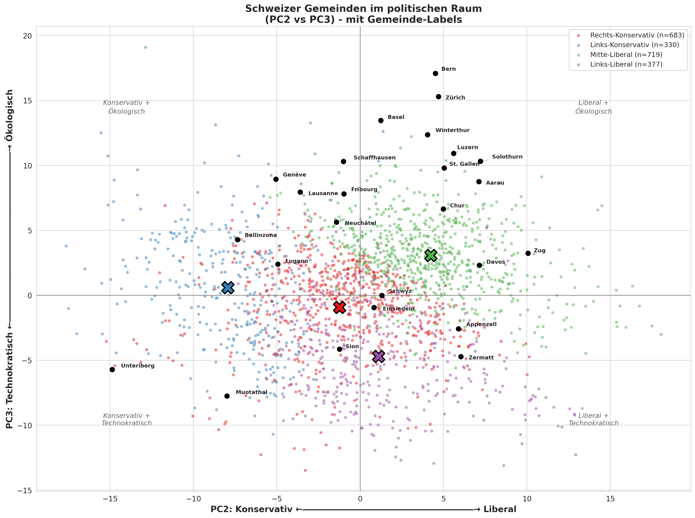
PC2 vs PC3: Konservativ-Liberal vs Technokratisch-Oekologisch
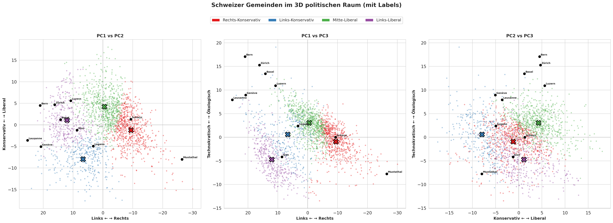
Uebersicht: Alle drei Projektionen der 4 Cluster
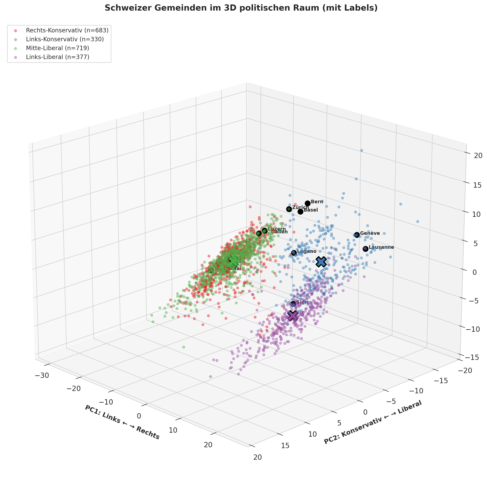
3D-Visualisierung der Gemeinden im politischen Raum
8.2 Cluster-Interpretation
Zusammenfassung der Cluster-Profile:
Cluster 0 (Rechts-Konservativ):
Diese Gemeinden liegen hauptsaechlich in der Innerschweiz und traditionell rechten
Regionen. Sie zeigen negative PC1-Werte (rechts) und leicht negative PC2-Werte (konservativ).
Typisch: Muotathal, Schwyz, Appenzell.
Cluster 1 (Links-Konservativ):
Vorwiegend Westschweizer Gemeinden mit positiven PC1-Werten (links) aber stark
negativen PC2-Werten (konservativ). Diese Kombination ist typisch fuer laendliche
Westschweizer Gemeinden wie Geneve, Lugano.
Cluster 2 (Mitte-Liberal):
Der groesste Cluster mit Gemeinden nahe der Mitte bei PC1 aber liberal bei PC2.
Typische Deutschschweizer Staedte wie Zuerich, Luzern, St. Gallen, Zug.
Cluster 3 (Links-Liberal):
Stark links (hohe PC1-Werte) und leicht liberal (positive PC2-Werte).
Typisch fuer urbane Waadtlaender Gemeinden wie Bern, Lausanne.